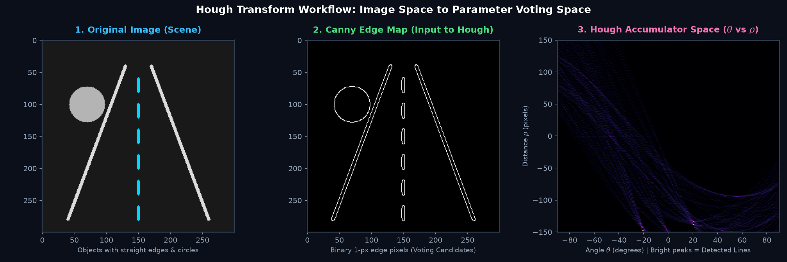
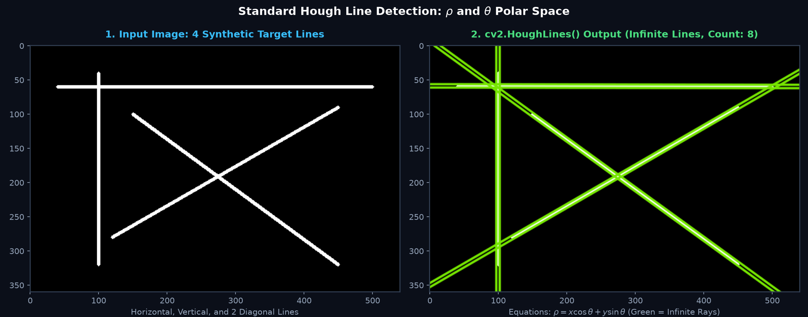
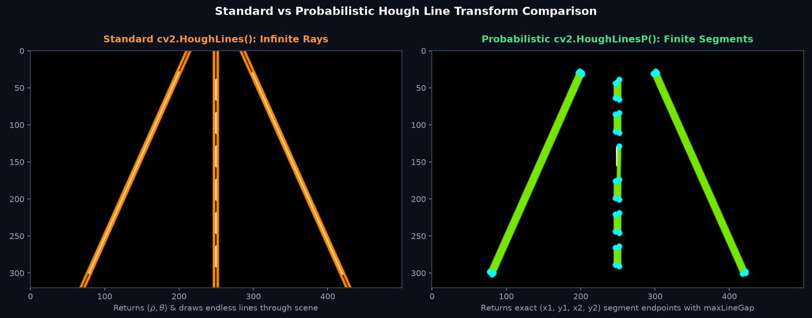
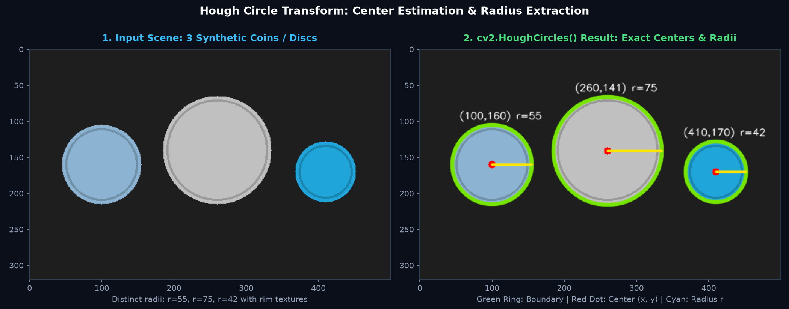
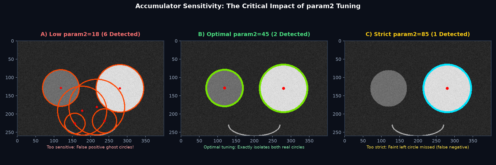
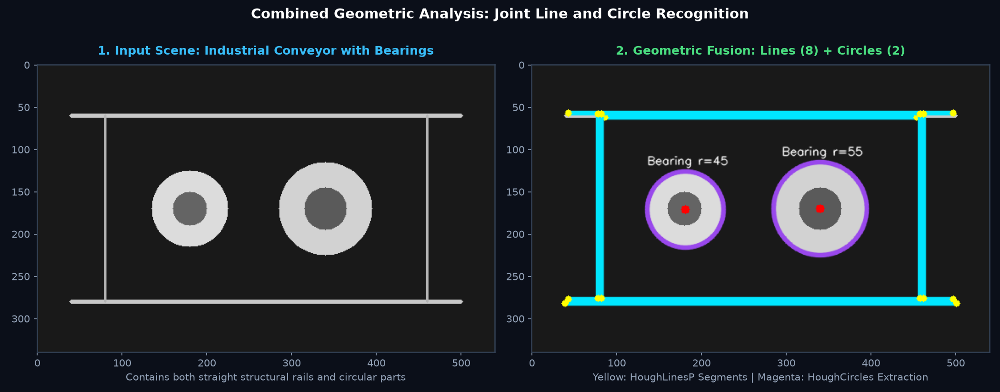

Edges sirf tooti-phooti boundary pixels dete hain. Hough Transform ek revolutionary parameter-space voting technique hai jo inhi scattered pixels ko mathematically combine karke straight lines, highway road lanes, aur circular coins/bearings detect karti hai!
Imagine kijiye aap ek self-driving car ke liye camera image process kar rahe hain. Canny edge detector road ke kinaron par hazaron 1-pixel white dots nikaalta hai. Par computer ko kaise pata chalega ki kaunse dots milkar ek straight highway lane bana rahe hain?
Yahin par kaam aata hai Hough Transform:
Image ke har ek edge pixel (x, y) ko parameter space mein map kiya jata hai. Ek point se infinite lines guzar sakti hain!
Ek 2D voting grid (Accumulator) banti hai. Har edge pixel un sabhi lines ke liye ek "Vote" daalta hai jinpar wo lie karta hai.
Grid cell jisme sabse zyada votes jama hote hain, wo announce karti hai: "Mujhpar 200 edge pixels lie karte hain, main ek real straight line hoon!"

School geometry mein hum line ki equation y = mx + c padhte hain. Lekin image processing mein ek problem hai: jab line bilkul vertical (khadi) hoti hai, to slope m → ∞ ho jata hai, jisse computer division by zero se crash ho sakta hai!
Isiliye Hough Transform Polar Coordinate System use karta hai:
(0, 0) se line tak ka perpendicular distance (in pixels).cv2.HoughLines()lines = cv2.HoughLines(edges, rho=1, theta=np.pi/180, threshold=100)| Parameter | Meaning & Recommended Value | Impact on Detection |
|---|---|---|
rho |
Distance resolution (typically 1 pixel). | Chhoti value zyada precision deti hai, badi value vote grouping fast karti hai. |
theta |
Angle resolution (typically π / 180 = 1 degree in radians). | Angle step size. 1 degree accuracy standard hai. |
threshold |
Minimum votes needed in accumulator cell (e.g. 100 votes). | Zyada threshold = sirf lambi/prominent lines; Kam threshold = noisy faint lines. |
cv2.HoughLines() finite line segments nahi deta! Ye infinite lines (anant rekhaayein) ke (ρ, θ) parameters return karta hai jo poori image ke cross pass hoti hain!

import cv2
import numpy as np
# 1. Image load karein aur Grayscale mein convert karein
img = cv2.imread('grid_lines.png')
gray = cv2.cvtColor(img, cv2.COLOR_BGR2GRAY)
# 2. Canny edge detector se 1-pixel boundary nikaalein
edges = cv2.Canny(gray, 50, 150)
# 3. Standard Hough Line Transform (rho=1 px, theta=1 deg, threshold=100 votes)
lines = cv2.HoughLines(edges, rho=1, theta=np.pi/180, threshold=100)
print(f"Kul {len(lines)} lines detect hui!")
# 4. Infinite lines draw karne ke liye polar coordinates se do endpoints nikaalein
output = img.copy()
if lines is not None:
for line in lines:
rho, theta = line[0]
a = np.cos(theta)
b = np.sin(theta)
x0 = a * rho
y0 = b * rho
# Line ko 1000 pixels aage-peeche extend karein
x1 = int(x0 + 1000 * (-b))
y1 = int(y0 + 1000 * (a))
x2 = int(x0 - 1000 * (-b))
y2 = int(y0 - 1000 * (a))
cv2.line(output, (x1, y1), (x2, y2), (0, 255, 0), 2)Standard Hough algorithm slow hota hai kyunki wo har edge pixel ke liye voting compute karta hai. Saath hi, ye real-life line segments ke start aur end points nahi deta.
Probabilistic Hough Transform (cv2.HoughLinesP) iska perfect solution hai:
[x1, y1, x2, y2]!HoughLinesPlines = cv2.HoughLinesP(edges, 1, np.pi/180, threshold=50, minLineLength=40, maxLineGap=15)minLineLengthMinimum pixel length. Isse chhoti lines reject ho jayengi. Chhote noisy dashes ko filter out karne ke liye useful hai.
maxLineGapMaximum allowed gap between broken segments. Agar ek hi line ke do pieces beech mein 15 pixels se kam toote hain, to OpenCV unhe jodkar ek single segment bana dega!

# Probabilistic Hough Line Transform run karein
lines_p = cv2.HoughLinesP(
edges,
rho=1,
theta=np.pi/180,
threshold=30, # Accumulator threshold
minLineLength=20, # Reject lines shorter than 20 px
maxLineGap=15 # Connect broken dashed gaps up to 15 px
)
output_p = img.copy()
if lines_p is not None:
for line in lines_p:
x1, y1, x2, y2 = line[0]
# Seedhe endpoints ke beech line segment draw karein
cv2.line(output_p, (x1, y1), (x2, y2), (0, 230, 118), 3)
# Endpoints par cyan dots banayein
cv2.circle(output_p, (x1, y1), 4, (255, 255, 0), -1)
cv2.circle(output_p, (x2, y2), 4, (255, 255, 0), -1)Circle ki equation hoti hai: (x - xc)2 + (y - yc)2 = r2. Isme 3 unknowns hote hain: Center coordinates (xc, yc) aur Radius r.
Agar hum 3D voting accumulator banayein to memory blast ho jayegi! Isiliye OpenCV Hough Gradient Method use karta hai: edge gradient ki direction seedhe circle ke center ki taraf point karti hai, jisse calculation fast 2D space mein ho jaati hai.
circles = cv2.HoughCircles(blurred, cv2.HOUGH_GRADIENT, dp=1.2, minDist=80,
param1=100, param2=35, minRadius=20, maxRadius=90)| Parameter | Recommended | Function & Practical Role |
|---|---|---|
dp |
1.0 ya 1.2 |
Inverse accumulator resolution. 1.0 par original image resolution jitni voting hoti hai. |
minDist |
Distance in px (e.g. 80) |
Do alag-alag circle centers ke beech ka minimum distance. Ek hi coin par multiple duplicate circles avoid karta hai! |
param1 |
100 |
Internal Canny edge detector ka higher threshold (lower threshold automatically param1 / 2 hoti hai). |
param2 ★ |
30 to 50 |
Accumulator voting threshold for center detection. Jitna chota hoga, utne zyada false ghost circles aayenge; jitna bada hoga, utne strict detections honge! |
minRadius / maxRadius |
Expected size range | Sirf specific size ke circles dhoondhne ke liye (e.g. coin ka radius 25px se 80px ke beech). Compute time bachta hai! |

param2Circle detection mein sabse common mistake param2 ko galat set karna hota hai:

import cv2
import numpy as np
img = cv2.imread('coins.png')
gray = cv2.cvtColor(img, cv2.COLOR_BGR2GRAY)
# 1. Circle detection ke liye strong Gaussian blur zaroori hai!
blurred = cv2.GaussianBlur(gray, (9, 9), 2)
# 2. Hough Circles run karein
circles = cv2.HoughCircles(
blurred, cv2.HOUGH_GRADIENT,
dp=1.2, minDist=80,
param1=100, param2=35,
minRadius=25, maxRadius=80
)
if circles is not None:
circles = np.uint16(np.around(circles))
print(f"Kul {len(circles[0])} circles detect hue!")
for pt in circles[0, :]:
cx, cy, r = int(pt[0]), int(pt[1]), int(pt[2])
# Outer circle (Green)
cv2.circle(img, (cx, cy), r, (0, 230, 118), 3)
# Center point (Red dot)
cv2.circle(img, (cx, cy), 4, (0, 0, 255), -1)
print(f" Center: ({cx}, {cy}), Radius: {r} px")Real-world industrial vision systems mein scenes mein lines aur circles dono ek saath exist karte hain (jaise conveyor belt ke straight rails par aane wale cylindrical bearings ya cans):

| Algorithm Technique | Real-Life Industry Application | Why Hough is Used |
|---|---|---|
cv2.HoughLinesP() |
Autonomous Lane Keeping (ADAS) | Road ki tooti hui dashed markings ko connect karke vehicle lane trajectory nikaalna. |
cv2.HoughLines() |
Document Deskewing & OCR | Scanned paper ke straight horizontal page borders detect karke tilt angle (θ) se image seedhi karna. |
cv2.HoughCircles() |
Coin & Currency Sorters | Fast processing mein coins ke accurate centers aur radii nikaalkar cash denomination count karna. |
cv2.HoughCircles() |
Bottle Cap & Eye Iris Tracking | Assembly lines par bottle caps ki sealing check karna aur biometric scanners mein pupil detect karna. |
# Conveyor scene par lines aur circles dono extract karein
lines = cv2.HoughLinesP(edges, 1, np.pi/180, threshold=60, minLineLength=80, maxLineGap=10)
circles = cv2.HoughCircles(blurred, cv2.HOUGH_GRADIENT, dp=1.2, minDist=50,
param1=100, param2=30, minRadius=20, maxRadius=60)
print(f"Conveyor rails: {len(lines)} line segments detected.")
print(f"Moving items: {len(circles[0])} circular bearings detected.")cv2.GaussianBlur(gray, (9, 9), 2) ya median blur zaroor apply karein!
HoughLines mein minLineLength pass karnaTypeError: HoughLines() takes at most 4 arguments.minLineLength aur maxLineGap sirf cv2.HoughLinesP() ke parameters hain! Standard HoughLines infinite lines return karta hai.
param1 aur param2 ko aapas mein confuse karnaparam1 internal Canny edge detection sensitivity hai, jabki param2 circle center voting accumulator threshold hai! Agar circle detect nahi ho rahe, to pehle param2 ko dheere-dheere kam (e.g. 40 se 25) karein!
y = mx + c ke bajaye polar coordinates ρ = x cos(θ) + y sin(θ) kyun use karte hain?θ = 90° ya 0° se cleanly represent ho jaati hai!
cv2.HoughLines() aur cv2.HoughLinesP() ke output format mein kya mukhya antar hai?cv2.HoughLinesP probabilistic random sampling use karke finite segment endpoints [x1, y1, x2, y2] return karta hai, jo road lanes draw karne ke liye perfect hain!
cv2.HoughCircles() run karne par image mein actual circle ke alawa bahut saare false "ghost circles" detect ho rahe hain, to kya karna chahiye?param2 accumulator threshold hai. Ise badhane se sirf wahi centers pass honge jinhe bohot saare edge pixels vote karte hain, jisse false ghost circles filter out ho jaate hain!
Ab jab humne geometric shapes (lines aur circles) ko isolate karna seekh liya hai, agle topic mein hum image ke tonal distribution ko analyse karna seekhenge: kaise Histograms se andheri ya overexposed photos ko detect karte hain aur CLAHE se lighting contrast ko instantly restore karte hain!